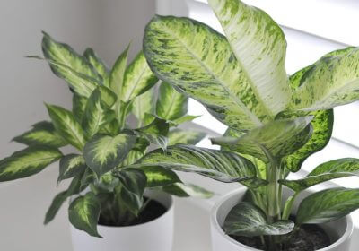
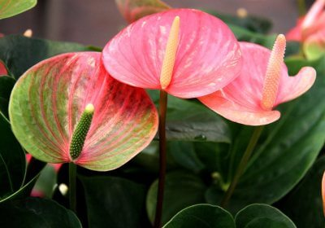

Декоративно-лиственные растения
Декоративно-лиственные комнатные растения включают более 150 разновидностей, объединенных в одну группу по общему признаку: наличию красивой,
эффектной листвы. Цветут они 1–2 раза в год, но особой привлекательностью цветы большинства видов не отличаются.
Лиственные виды сами по себе являются украшением любого интерьера, нередко становятся великолепным фоном для цветущих экземпляров.
Среди комнатных декоративно-лиственных растений безусловными фаворитами являются:
-антуриум, -колеус,
-диффенбахия, -аглаонема,
-монстера, -кордилина,
-фатсия, -плющ,
-шеффлера,
-фиттония.

Декоративно-лиственные растения менее требовательны к условиям освещенности по сравнению с цветущими. Но для них очень важен своевременный и равномерный полив, температурный режим и влажность. Неправильный уход может привести к высыханию и потемнению кончиков листьев. Нередко декоративный вид теряется из-за недостатка питательных веществ.
Внешний вид
Внешний вид листвы декоративных комнатных растений очень разнообразен и отличается и по форме, и по размерам, и по очертаниям листа и его текстуре, не говоря уже о рисунке и окраске.
Диапазон огромен – у солейролии листья просто крошечные, а у монстеры они достигают шириной 60 см; у кротона листья цельные с ровными краями, а аспарагус гордится своей необыкновенной перистой листвой. Текстура самого листа тоже может быть самой непредсказуемой: гладкой, колючей, матовой, блестящей, бархатистой, гофрированной и т.д.
Листья могут быть полностью зелеными, а могут быть пестрыми, разноцветными, с различными прожилками и так далее.
Правила ухода
Что касается ухода, то общих правил для этой группы нет, поскольку к ней относятся растения самой разной структуры, характера и формы роста. И требования каждого к освещенности, поливу, грунту, удобрению, температуре, влажности и прочим условиям содержания будут отличаться.
Условия их содержания могут существенно отличаться, но общим неизменным признаком всех экземпляров являются вьющиеся побеги либо удивительно красивые листья: яркие пестрые, легкие кружевные, крупные лопастные или сильно рассеченные. Этим растениям не обязательно цвести. Их великолепный внешний вид даже без бутонов служит прекрасным украшением любого интерьерного пространства.